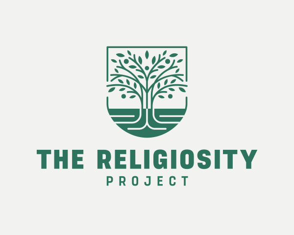

The Religiosity ProjectHistory & Theology
We're dedicated to sharing up-to-date and accurate information about religions, their history, and their beliefs.

Our Commitment to Historicity...
One thing we take seriously here is accuracy. When we talk about the history of a religion, we want to make sure we're actually getting it right, and that means going to the right sources. We're talking to scholars who have spent their careers studying these traditions, historians who understand the full context of how these faiths developed over time, and most importantly, members of the religious communities themselves.
And Fair Discussion
Nobody knows a religion better than the people who actually live it. Too much religious content online is written from the outside looking in, and it shows. Too often are beliefs misrepresented for the sake of protecting one's own personal views. We believe that if you're going to talk about something as important as someone's faith and its history, you owe it to your audience and to those communities to do the work. That's the standard we hold ourselves to every time we publish a video or post on our site.